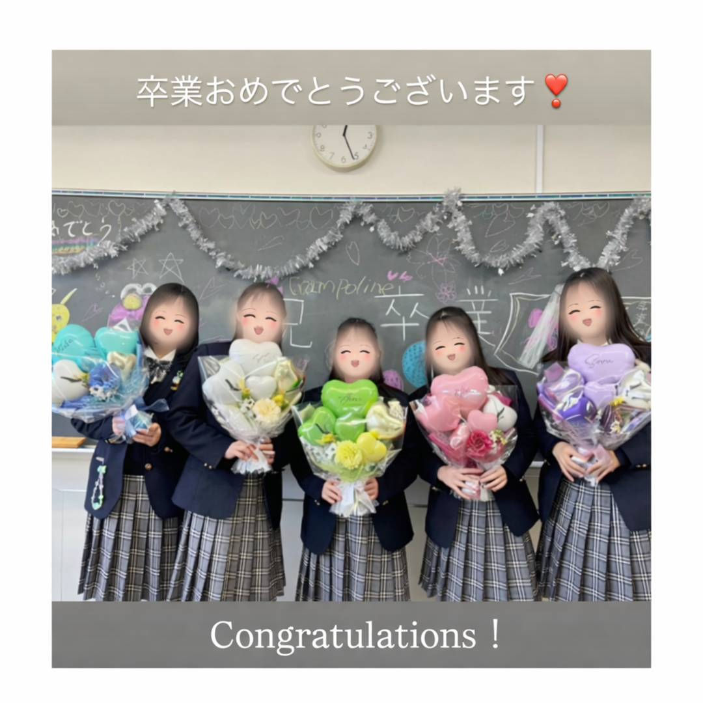
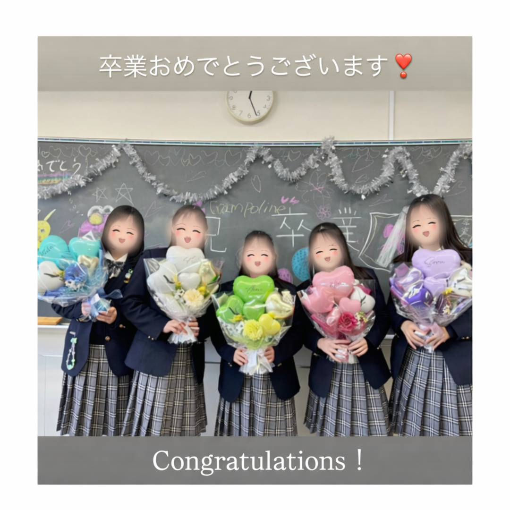

Profile
作家紹介

世界にひとつの“おしゃれ”を、
心をこめて。
和歌山発のバルーンギフトと装飾のお店。
誕生日や記念日など、
大切な日のためのバルーンを
ひとつひとつ丁寧に手作りしています。
キーワードは、
「おしゃれ」「世界にひとつ」「想像以上」。
お祝いの気持ちが伝わる
世界にひとつのバルーン。
店舗や会場を
上品に華やかに彩ります。
生誕祭・ライブ・記念日に
世界観づくりもおまかせで。
※写真はイメージです
※完全オーダーメイドで制作します
イメージがなくても大丈夫
相談しながら形にします。

その人らしさが伝わる、
特別な“おめでとう”。

母の日・送別・就職など、
気持ちを形にする日。

新しい門出に、
写真にも残る贈りもの。

はじめての“おめでとう”を、
やさしく彩る。

世界観まで一緒に作る、
推しへのごほうび。

開店・周年・イベントを、
空間ごと華やかに。
※すべてフルオーダー。ご予算・イメージ相談OK
価格の目安
バルーンの種類によって異なります。
装飾用のゴムバルーンは、室内環境であれば数日〜1週間程度お楽しみいただけます。
ギフト用のバルーンはゴムではなくビニール製のため、環境が良ければ長期間きれいな状態を保てます。
中には数年お楽しみいただいている実績もあります。
※直射日光や高温多湿は避けてください。
はい、可能です。
バルーンは気圧の影響を受けるため、飛行機を利用した空輸での配送は行っていません。
とてもデリケートな商品のため、ご指定の時間帯での対面受け取り（手渡し）をおすすめしています。
配送の際は、状態を保てるよう丁寧な梱包を心がけています。
内容やお届け地域によって対応が異なるため、事前にご相談ください。
和歌山イオンでのお渡しは無料で対応しています。
近隣エリアでのお渡しも可能ですが、場所や内容によっては有料になる場合があります。
その場合でも、配送よりお得にお受け取りいただけるケースが多いです。
詳しくはご相談時にご案内します。
基本的には10日前までのご注文をお願いしています。
丁寧に制作し、完成後に空気の抜けなどの状態確認（検品）を行ったうえでお渡ししたいためです。
内容や時期によっては直前でも対応できる場合がありますので、まずはお気軽にご相談ください。
はい、大丈夫です。
「かっこよく」「かわいく」「落ち着いた感じ」など、色や雰囲気のイメージがあればぜひ教えてください。
はっきり決まっていない場合やおまかせの場合も、
ご用途や想いに合わせてこちらからご提案し、
自分自身が欲しくなるような納得のいく仕上がりを大切に制作しています。
そのほか気になることがあれば、
公式LINEよりお気軽にご相談ください。
「かわいすぎる！」
「想像をこえました」
「またお願いします」
「任せてよかった」
 


最新の装飾事例や制作風景は
Instagramで随時ご紹介しています。